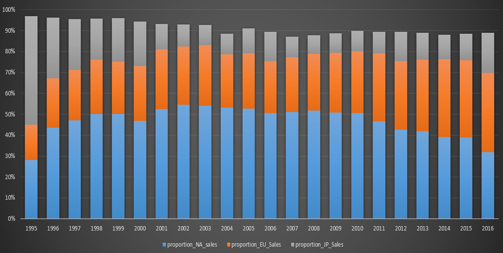

GameCo Video Game Sales Analysis
Analyzed video game sales trends across regions, genres, and platforms to support strategic decisions around product development and marketing investment.
Regional Trends
Genre Analysis
Market Strategy
- Problem: Understand changing game popularity across markets.
- Insight: Europe emerged as a key growth market while genre preferences varied by region.
- Tools: Excel, Pivot Tables, charts